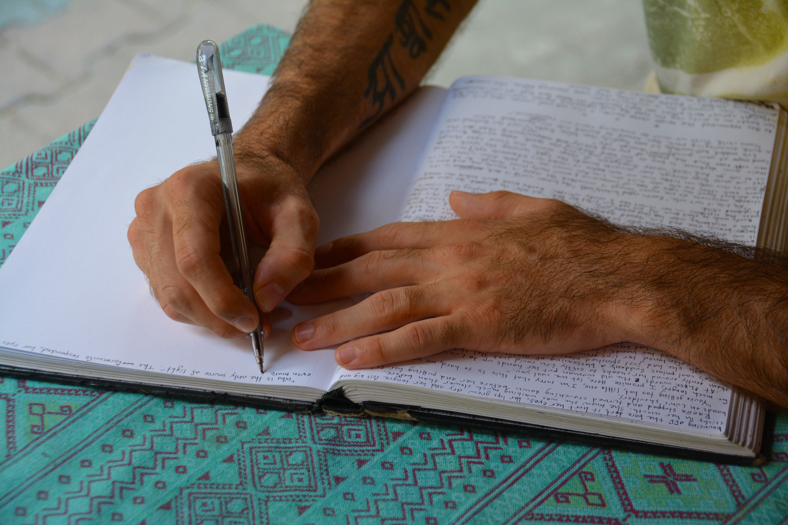

ABOUT
渡邊 啓太
WATANABE KEITA
1989年(平成元年)3月4日産まれ。 幼いころからレゴに慣れ親しみ、モノづくりが好きだった。メーカーに就職し、試験エンジニアとして仕事をするも思い描いた道とは違うと感じていた。4年目にして前から憧れていたWeb系エンジニアに挑戦する。しかし、体調を崩し、２年ほど療養することに。2021年秋よりWebデザインのスクールに通い始める。フロントエンドよりのWebデザイナーを目指して30代未経験の再挑戦が始まる。
CAREER
-
2014
富士通ゼネラル入社。EMCエンジニアとして働き始める。会社員のかたわら3年かけて映画を制作し、上映会を実施した。
-
2018
富士通ゼネラル退社。フリーランスエンジニアとして活動する。EMC試験だけではなく、映像制作も手掛けた。
-
2019
体調を崩し、入院する。およそ2年近く入院生活をする。
-
2021
はれて退院する。Webデザインを学び、再び挑戦する。
ACTIVITY
-
Movie
映像制作を手掛けている。映画はプロデューサーを務めた。主な作品は「U.M.B.F.」。
- 
Novel
小説が書ける。８万字に及ぶ長編小説も書き上げた実績がある。主な作品は「夢の続きはクリスマス・イブで」。
-
DJ
音楽をかけるのが好きで、DJスクールに通い、DJデビューもしている。最近はchill系の音楽を好んでかけている。
CONTACT
〒101-0062 東京都千代田区神田駿河台4-6 御茶ノ水ソラシティ アカデミア 3F0120-xxx-xxx
Email: xxx@example.com
-
Instagram
-
twitter
-
facebook